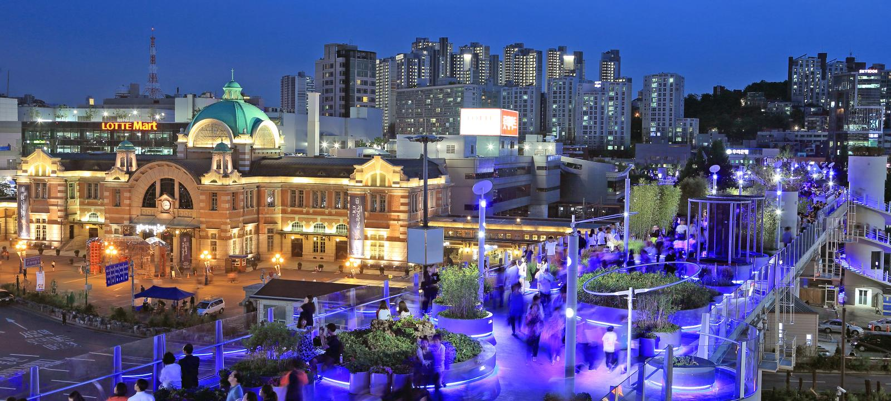
Seoullo 7017
Formerly an exit ramp of a highway, the government repurposed this into a beautiful outdoor garden and walking area.
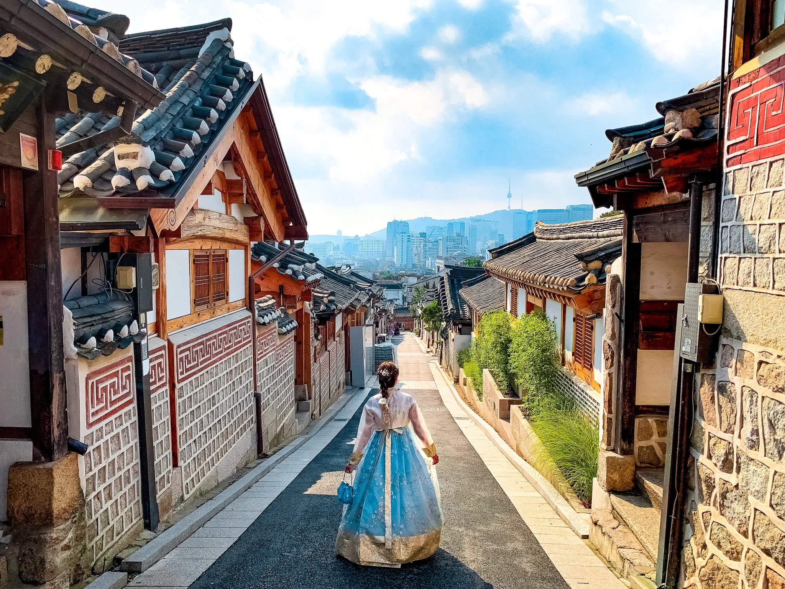
Bukchon Traditional Village
Tourists are able to step into the past here which is located in the heart of downtown Seoul.
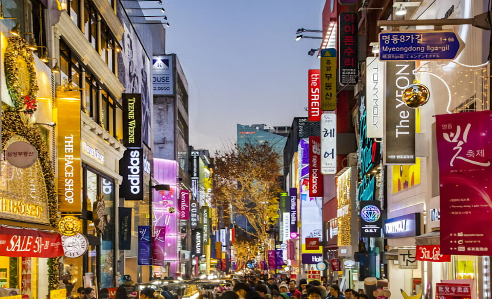
Myeongdong Shopping
Shopping Overload. Find the souveniors and good eats all in one massive shopping district.
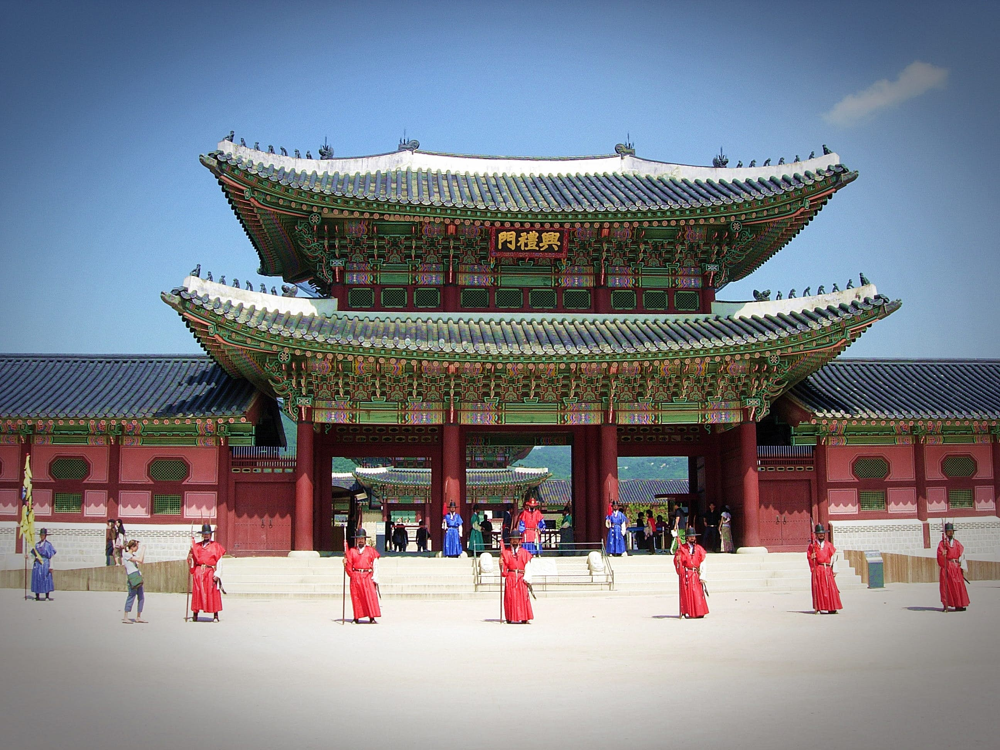
Gyeongbok Palace
Visit the Royal Palace where the former kings and queens used to reside as Bukhan Mountain sits in the background

Gwangjang Market
Get ready to eat street food like a pro at Gwangjang Market. The market is packed with various vendors.
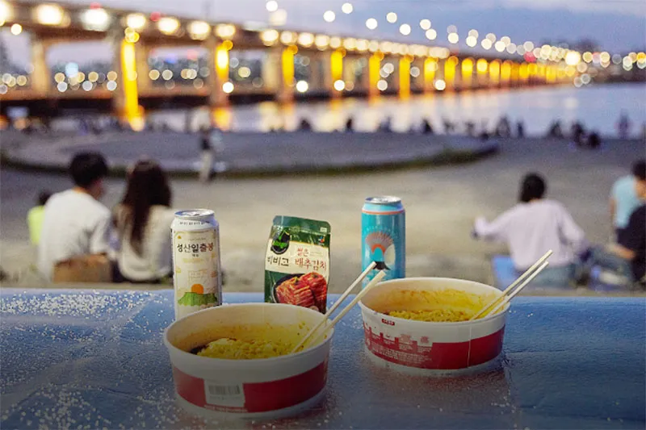
The Han River
One of Koreans favorite past times. Having chicken and beer as they hangout with friends at the Han River.
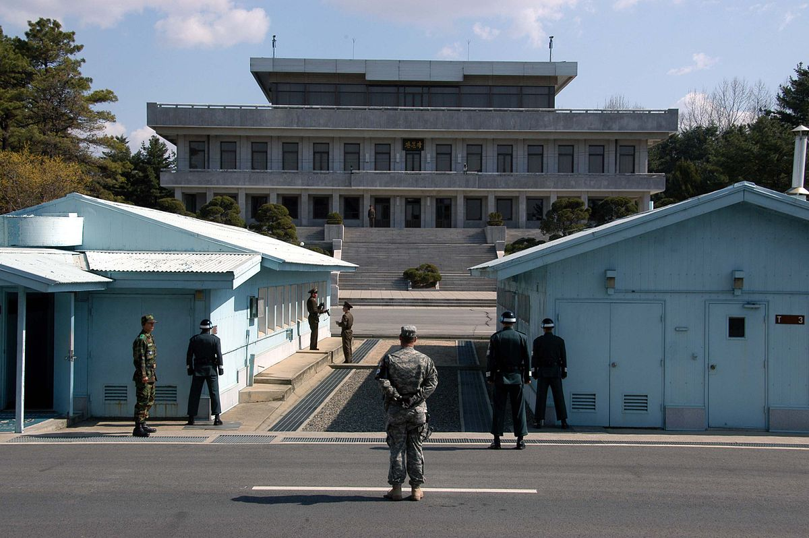
DMZ Tour
Korea's Top destination for American tourists. Visitors are able to learn about the constantly changing relationship between the South and North. Visitors are even able to step foot inside of North Korea when they visit the negotiation room.
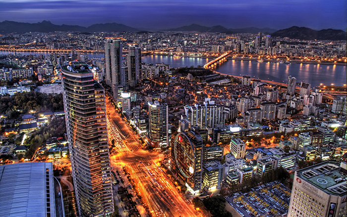
Gangnam Business District
The place that inspired the worldwide hit, Gangnam Style. It is Korea's new finanical district and home to the wealthiest residents.
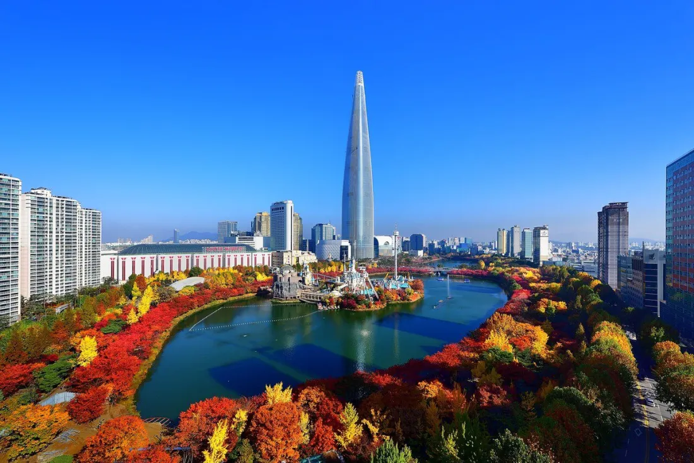
Lotte World & Seokchon Lake
Lotte World, owned by the congolmerate Lotte, is a major tourist destination. It is located directly next to the world's 6th tallest building and beutiful Seokchon Lake.
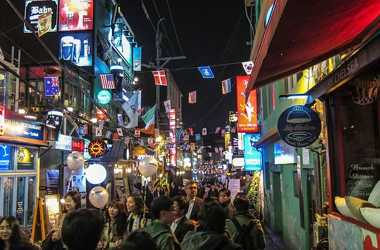
Itaewon District
The place where many foreigners call home. Trendy, hip, and funky are a few words to describe Itaewon.

The Korean War Museum
Located next to Itaewon, the Korean War Museum introduces visitors to the technology and struggles of the Korean War.
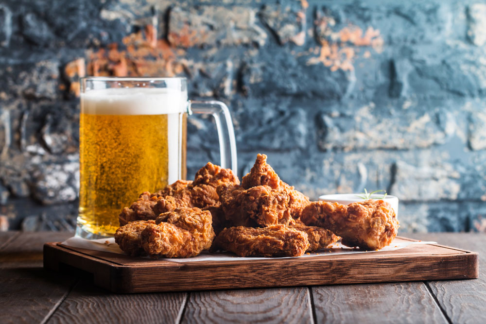
Korean Fried Chicken
Yes. Chicken. According to recent reports, there are more chicken establishments in Korea than there are McDonalds in the world. Koreans love fried chicken and it's good.

Bibimbap
Legend has it that Bibimbap was the food of the peasants. This mix bowl of rice, vegetables, ground beef, and spicy pepper paste is a must.
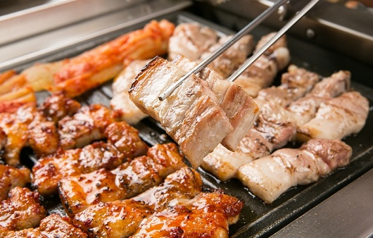
Korean BBQ
Grilled meat. Delicious at that. It's prepare at your table so you can have each bite nice and hot.
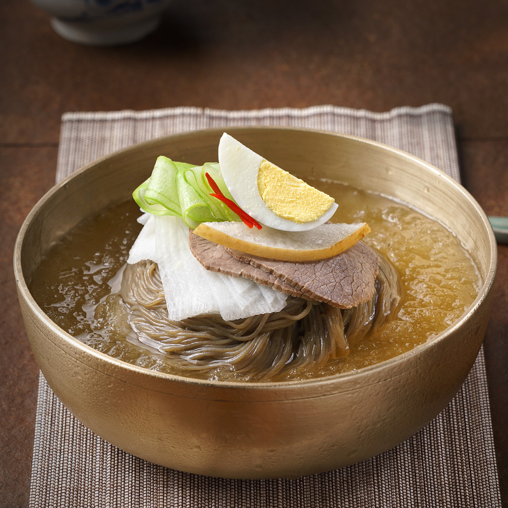
Naengmyeong
Cold noodles are a go to for many Koreans to beat the summer heat.
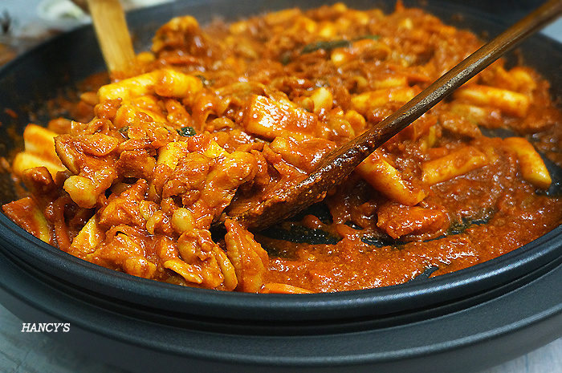
Dalkgalbi
Grilled chicken with vegetables in a pepper paste are a go to meal for many Koreans.